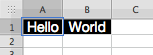
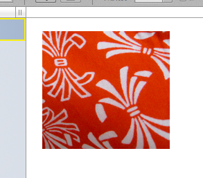
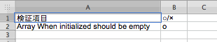
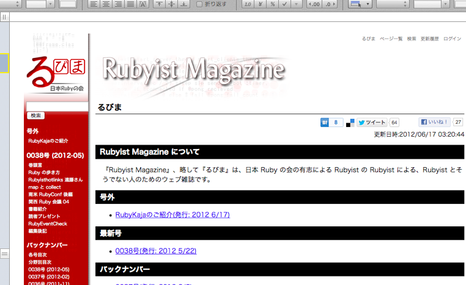

Axlsx でテスト支援
書いた人: 佐藤竜之介 (@tricknotes)
はじめに
「テスト結果の報告書を Excel で作成して提出しなくてはいけない」
そんな状況の中、手作業で Excel を作成されている方はいらっしゃいませんでしょうか？ 本稿では、RSpec や Cucumber の自動テストの結果をもとに、Axlsx を使って Excel ファイルのレポートを自動作成をする方法をご紹介したいと思います。
Axlsx って？
Axlsx は Randy Morgan(@morgan_randy) 氏 によって開発されている、Office Open XML Spreadsheet の生成ツールです。 Excel をはじめ、OpenOffice などの各オフィスアプリケーションで閲覧することのできる表計算データを作成することができます。
現在活発に開発が進められており、日々バージョンが上がっています。 本稿での対象とするバージョンは 1.1.8 です。
Axlsx の使い方
さっそくですが、Axlsx をどのように利用すればよいのか、実際に試してみましょう。
まずは Axlsx をインストールしましょう。
$ gem install axlsxBundler を利用する場合は、Gemfile に以下の行を追加してください。
gem 'axlsx'これで準備は完了です。 さっそく簡単なサンプルを書いてみましょう。
- example.rb
require 'axlsx'
package = Axlsx::Package.new
worksheet = package.workbook.add_worksheet(name: 'Example')
worksheet.add_row(['Hello', 'World'])
package.serialize('example.xlsx')
このファイルを実行すると、example.xlsx というファイルが生成されているかと思います。
お手持ちのオフィスアプリケーションで開いてみてください。

また、Numbers をお使いの方であれば文字が表示されていないかと思います。 これを解決するためには、文字列を sharedString.xml に保存するようにする必要があります。 Axlsx では以下のように指定します。
# ...
package.use_shared_strings = true # for Numbers
package.serialize('example.xlsx')
なお、本稿では互換性を重視して常にこの指定を行うことにします。
では次に、セルにスタイルをあててみましょう。
package.workbook.styles do |style|
black = style.add_style(:bg_color => '000000', :fg_color => 'FFFFFF', :sz => 14, :alignment => { :horizontal=> :center })
worksheet.add_row(['Hello', 'World'], style: black)
end

また、画像を貼り付けることもできます。 対応している形式は、PNG, GIF, JPEG の3種類です。
worksheet.add_image(image_src: '/path/to/your/image')
この例では、筆者のアイコン画像を貼り付けてみました。 
以上、ごく一部ですが Axlsx の簡単な例を試してみました。
また、利用するオフィスアプリケーションによっては、正しく表示されない部分があります。 これについては、Known interoperability issues. に説明があります。
筆者は Numbers’09 バージョン2.2 で検証しています。
テスト支援ツールとしての Axlsx
さて、本稿のテーマは 「Axlsx でテスト支援」です。 ということで、テスト支援のための使い方をご紹介したいと思います。
「テスト結果の報告書を Excel で作成して提出しなくてはいけない」
そんな状況であっても、その Excel ファイルを人間が直接作成するのはあまり好ましい方法とは言えません。できるならば、そのドキュメントはテスト結果から自動で生成したいところです。その提出すべきドキュメントを RSpec や Cucumber のテストから生成できたら気持ちいいと思いませんか？
そこで本稿では、Axlsx を使ってテスト結果を Excel ファイルで生成するための実践的な方法をご紹介します。
RSpec と一緒に使う
まずは RSpec と一緒に使う方法をご紹介します。 対象バージョンは以下です:
- RSpec (2.11.0)
簡単なテストを作成して、その実行結果を Axlsx でレポート出力してみましょう。 作成するテストは「Array について、初期化された際は中身が空であること」とします。
- spec/example_spec.rb
# coding: utf-8
describe Array do
context 'When initialized' do
it { should be_empty }
end
end
作成したテストが成功することを確認します。
$ rspec spec/example_spec.rbそれでは、このテストの実行結果を Axlsx でレポート出力するようにしてみましょう。
- spec/example_spec.rb
# coding: utf-8
require 'axlsx'
describe Array do
context 'When initialized' do
# テスト実行前にレポート作成の準備をする
before(:all) do
@excel = Axlsx::Package.new
@worksheet = @excel.workbook.add_worksheet(name: 'Array spec')
@worksheet.add_row(['検証項目', '○/×'])
end
# テスト実行後に成否を取得してレポートに記入する
after(:each) do
# テストの検証項目名を取得する
description = self.example.full_description
if self.example.metadata[:description].empty?
description += RSpec::Matchers.generated_description
end
# テスト実行時に発生した例外を取得する
exception = self.example.exception
@worksheet.add_row([description, exception ? 'x' : 'o'])
end
# テスト実行後に xlsx ファイルを保存する
after(:all) do
@excel.use_shared_strings = true # for Numbers
@excel.serialize('array_spec.xlsx')
end
it { should be_empty }
end
end
RSpec の after/before を利用して、すべての検証が終わった後にカレントディレクトリに array_spec.xlsx というファイル名でレポートを生成するよう
それでは、この状態でテストを実行して、レポートが作成されることを確認してみましょう。
$ rspec spec/example_spec.rbこれで、テストを実行するとレポートが作成されるようになりました。 
しかし、これではテスト自体とは関係の無い処理がテストファイルの中に含まれてしまうため、 新しく検証項目を追加する際に思考を阻害してしまいます。 しかも新しくファイルを追加した際には、その新しいファイルにもレポート生成に関する処理を記述する必要が出てきます。
これは好ましくない状況なので、レポート出力に関する処理はヘルパーに移動させることにしましょう。
- spec/spec_helper.rb
# coding: utf-8
require 'axlsx'
RSpec.configure do |config|
def excel
@@excel ||= Axlsx::Package.new
end
def worksheet
@@worksheet ||= excel.workbook.add_worksheet(name: 'Spec')
end
# テスト実行前にレポート作成の準備をする
config.before(:suite) do
worksheet.add_row(['検証項目', '○/×'])
end
# テスト実行後に成否を取得してレポートに記入する
config.after(:each) do
# テストの検証項目名を取得する
description = self.example.full_description
if self.example.metadata[:description].empty?
description += RSpec::Matchers.generated_description
end
# テスト実行時に発生した例外を取得する
exception = self.example.exception
worksheet.add_row([description, exception ? 'x' : 'o'])
end
# テスト実行後に xlsx ファイルを保存する
config.after(:suite) do
excel.use_shared_strings = true # for Numbers
excel.serialize('array_spec.xlsx')
end
end
これで、テスト本体からレポート出力に関する処理を取り除くことができます。
- spec/example_spec.rb
require_relative './spec_helper'
describe Array do
context 'When initialized' do
it { should be_empty }
end
end
こうすることで、レポートに出力するかどうかを意識することなく新しいテストを追加することができます。
RSpec を使ったウェブアプリケーションの受け入れテストで使う
では次に、RSpec を使ったウェブアプリケーションの受け入れテストについてもレポートを作成してみましょう。
受け入れテストは Capybara を利用して作成することにします。 対象バージョンは以下です:
- Capybara (1.1.2)
まずは、RSpec で Capybara を利用する設定を行います。
さきほど作成した spec/spec_helper.rb に以下の内容を追加してください。
- spec/spec_helper.rb
# coding: utf-8
require 'capybara/dsl'
require 'capybara/rspec'
Capybara.default_driver = :selenium
RSpec.configure do |config|
config.include Capybara::DSL
end
試しに、るびまにアクセスするテストを書いてみましょう。
- spec/rubima_spec.rb
# coding: utf-8
require_relative './spec_helper'
describe 'るびま' do
context 'トップページにアクセスした場合' do
before do
visit 'http://jp.rubyist.net/magazine/'
end
it 'タイトルに "るびま" と表示されていること' do
page.should have_css('h1', text: 'るびま')
end
end
end
このテストを実行すると Selenium を利用してるびまにアクセスしコンテンツを検証します。
$ rspec spec/rubima_spec.rbレポートの出力は以下のようになります。

せっかくなので、レポートに画面のスクリーンショットも貼り付けることにしましょう。
Capybara のドライバとして Selenium を利用するように設定している場合であれば、現在表示している画面を PNG で出力する機能を使うことができます。 以下のコードを、spec/spec_helper.rb に追加します。
- spec/spec_helper.rb
require 'mini_magick'
# ...
RSpec.configure do |config|
# ...
def serial_number
@@serial_number ||= 0
@@serial_number += 1
end
# テスト実行後にスクリーンショットを取得して xlsx ファイルに貼り付ける
config.after(:each) do
spec_number = serial_number
image_src = './screenshot_%i.png' % spec_number
# スクリーンショットを取得する(driver 非互換)
page.driver.browser.save_screenshot(image_src)
# 画像のサイズを取得し設定する
image_data = MiniMagick::Image.open(image_src)
excel.workbook.add_worksheet(name: 'Screenshot %s' % spec_number) do |sheet|
sheet.add_image(image_src: image_src) do |image|
image.width = image_data[:width]
image.height = image_data[:height]
end
end
end
end
スクリーンショットを取得する機能は Capybara のドライバ依存なので、別のドライバを利用する際にはそのドライバで用意されているスクリーンショット出力方法を使用してください。 (なお、Capybara 2.0.0 ではスクリーンショット取得用のインターフェースが用意される見込みです: https://github.com/jnicklas/capybara/tree/2.0.0.beta2#debugging )
また Axlsx で画像ファイルを追加する場合、ユーザが画像のサイズを設定する必要があります。 今回は、画像サイズを取得するために MiniMagick を利用しています。 本稿で対象としているバージョンは以下です:
- MiniMagick (3.4)
これで、スクリーンショット付きのレポートを出力できるようになりました。

また、CI 環境でテストを実行し、その実行結果を出力することもできます。 その場合には、ヘッドレスで実行できる Capybara のドライバを選択しましょう。 例えば、capybara-webkit や poltergeist が利用可能です。 これらのドライバを利用する場合、スクリーンショットを取得している箇所は以下のメソッドを利用するようにしてください。
page.driver.render(image_src)Cucumber と一緒に使う
Cucumber でも、RSpec の場合と同じようにレポートを作成することができます。 対象バージョンは以下です:
- Cucmber (1.2.1)
- RSpec (2.11.0)
- Capybara (1.1.2)
- MiniMagick (3.4)
まずは、Cucumber を実行するための初期設定をします。
- features/support/env.rb
# coding: utf-8
require 'capybara/cucumber'
require 'rspec/expectations'
Capybara.default_driver = :selenium
World(RSpec::Matchers)
簡単に Cucumber を実行できるよう、Rake タスクを設定しておくこともできます。 Rake タスクの設定については Using Rake - cucumber/cucumber に情報が載っています。
これで、 Cucmber でテストを書く準備が整いました。
それでは、るびまを閲覧できることのフィーチャを書いてみましょう。
- features/rubima.feature
# coding: utf-8
Feature: るびまを閲覧できる
Scenario: るびまのトップページを閲覧できる
When webサイト "http://jp.rubyist.net/magazine/" にアクセスする
Then ページタイトルが "るびま" であること
このフィーチャを動作させるためのステップ定義は次のようになります。
- features/step_definitions/steps.rb
# coding: utf-8
When /^webサイト "(.*?)" にアクセスする$/ do |url|
visit url
end
Then /^ページタイトルが "(.*?)" であること$/ do |title|
page.should have_css('h1', text: title)
end
作成したフィーチャが正しく動作することを確認します。
$ cucumberでは、ここからレポート出力機能を組み込んでいきましょう。フィーチャを実行後にカレントディレクトリに rubima_features.xlsx というファイル名でレポートを生成するようにします。
- features/support/env.rb
# coding: utf-8
require 'capybara/cucumber'
require 'rspec/expectations'
require 'axlsx'
require 'mini_magick'
Capybara.default_driver = :selenium
World(RSpec::Matchers)
def excel
@@excel ||= Axlsx::Package.new
end
def worksheet
@@worksheet ||= excel.workbook.add_worksheet(name: 'Features') do |sheet|
sheet.add_row(['検証項目', '○/×'])
end
end
def serial_number
@@serial_number ||= 0
@@serial_number += 1
end
# スクリーンショットを貼り付ける
After do |scenario|
spec_number = serial_number
image_src = 'screenshot_%i.png' % spec_number
# スクリーンショットを取得する(driver 非互換)
page.driver.browser.save_screenshot(image_src)
# 画像のサイズを取得し設定する
image_data = MiniMagick::Image.open(image_src)
excel.workbook.add_worksheet(name: 'Screenshot %s' % spec_number) do |sheet|
sheet.add_image(image_src: image_src) do |image|
image.width = image_data[:width]
image.height = image_data[:height]
end
end
end
# テスト実行後に成否を取得してレポートに記入する
After do |scenario|
# テストの検証項目名を取得する
description = scenario.title
# テストの成否を取得する
failed = scenario.failed?
worksheet.add_row([description, failed ? '×' : '○'])
end
# テスト実行後に xlsx ファイルを保存する
at_exit do
excel.use_shared_strings = true # for Numbers
excel.serialize('rubima_features.xlsx')
end
レポート出力の処理は RSpec の項で書いたコードとほとんど同じです。 ただ、テスト実行時のフックの書き方が Cucumber と RSpec で異なるので、その部分を Cucmber 用に書き直しています。
それでは、テストを実行して、レポートが作成されることを確認してみましょう。
$ cucumberレポートは以下のように出力されます。

スクリーンショットは以下のように貼付けられます。 
最後に
以上で、本稿は終了となります。 いかがでしたでしょうか。
今回は passed/failure の結果しか表示していませんが、実際に使う場合は pending の結果も表示する必要があるでしょう。 他にも、テスト達成率をグラフで表示したり、テスト失敗時にスタックトレースを表示するなどしてもよいかもしれません。 また、レポートの表示形式もシンプルなものしか試しませんでしたが、レイアウトを工夫したりワークシートの組み方を変えたり、まだまだ改善の余地はあるかと思います。
本稿では、簡単な使い方しかご紹介しませんでしたが、Axlsx にはまだまだ魅力的な機能があります。 ぜひ、 Axlsx に同梱されている example を見てみてください。
さらなるレポートの改善は、読者のみなさまにお任せしたいと思います。 まずは、みなさまのテスト支援の参考としていただければ幸いです。
それでは良いテスト生活を！
著者について
佐藤竜之介(@tricknotes)
Ruby札幌所属、Sapporo.js主催。 札幌在住の Ruby と JavaScript が好きなプログラマ。 GitHub をもっと楽しくつかうためのアプリケーションである NotHub を運営している。